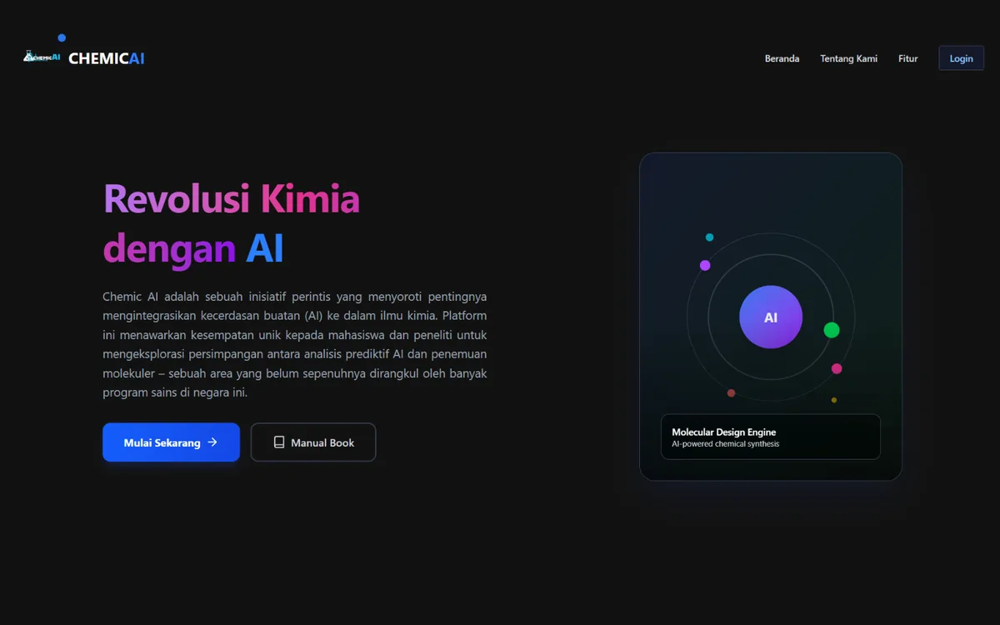

Buka demo live ↗
01 · Capstone tim · AI
ChemicAI · Generasi Molekul Kimia
Aplikasi web berbasis AI untuk menghasilkan dan menganalisis molekul kimia. Pengguna memasukkan struktur molekul dalam format SMILES, lalu model MolMIM dari NVIDIA menghasilkan kandidat molekul baru yang dioptimalkan.
- Parameter generasi bisa diatur: jumlah molekul, skor similarity, iterasi, dan partikel; properti yang dioptimalkan QED atau logP
- Login dan registrasi dengan JWT, riwayat generasi tersimpan per pengguna di PostgreSQL
- Arsitektur terpisah: front-end React, REST API FastAPI dengan migrasi Alembic, dan layanan machine learning
React 19Tailwind CSSFastAPIPostgreSQLJWT